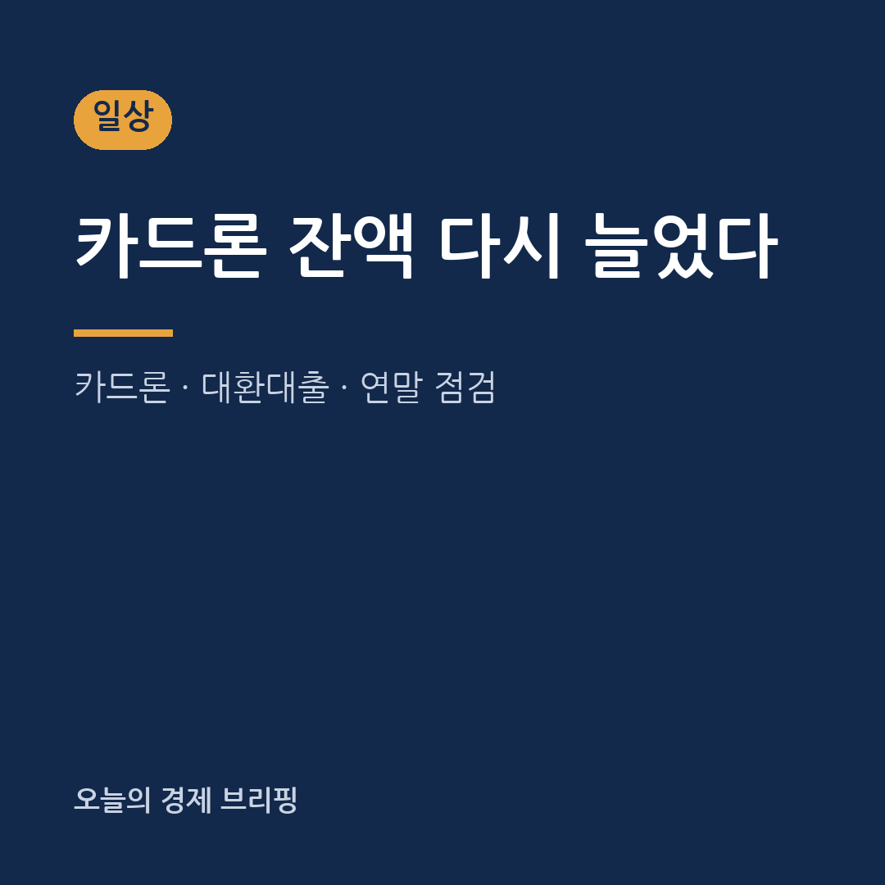
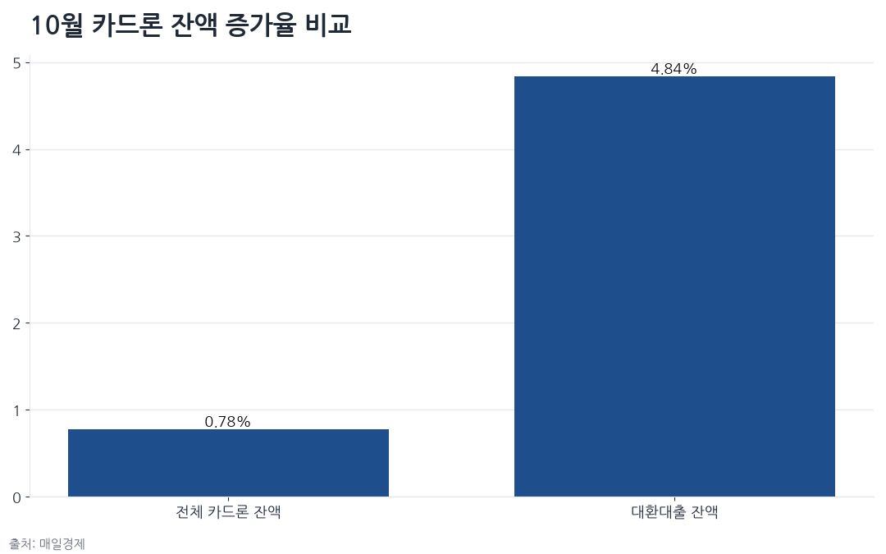

2026-11-20-1834-naver 발행 키트 · 이 페이지는 검색에 노출되지 않습니다.
제목
카테고리
일상태그
본문 (그림·표 포함)
휴대폰 블로그 앱에서는 그림이 같이 붙지 않을 수 있어요. 그때는 [글자만 복사] 후 아래 이미지를 저장해 [그래프1]·[표1] 자리에 첨부하세요.

연말이 다가오면 카드값에 모임비에 선물 비용까지, 통장이 유독 빨리 비는 느낌이 들죠. 그럴 때 급하게 손이 가는 게 카드론인데요, 오늘은 그 카드론 소식을 생활 관점에서 정리해 봤어요.
▶ 10월 카드론 잔액, 줄던 흐름이 바뀌었어요
10월 말 기준 국내 카드사의 카드론 잔액은 42조6701억원으로 집계됐어요. 직전 달보다 늘어서, 넉 달 만에 감소세를 멈추고 증가로 돌아섰다고 해요.
숫자만 보면 늘어난 폭은 크지 않아요. 전체 카드론 잔액이 한 달 새 0.78% 늘어난 정도거든요. 그래도 한동안 줄던 흐름이 바뀌었다는 점은 눈여겨볼 만해요.
▶ 진짜 눈에 띄는 건 '돌려막기' 성격의 대출이에요
같은 기간 기존 카드론을 갚으려고 같은 카드사에서 다시 받은 대출, 흔히 카드론 대환대출(옛 대출을 갚기 위해 새로 받는 대출)의 잔액은 4.84% 늘었어요. 금액으로는 한 달 새 791억원이 늘어난 거예요.
전체 증가율 0.78%와 비교하면 6배 넘게 빠른 속도예요. 쉽게 말해 새로 돈이 필요해서 빌린 사람보다, 이미 빌린 돈을 제때 못 갚아 다시 빌린 사람이 더 빠르게 늘고 있다는 신호로 읽힐 수 있어요.

▶ 그래서 내 생활엔 어떤 의미일까요
대환대출은 당장 연체를 피하게 해 주지만, 원금 부담이 사라지는 건 아니에요. 만기를 뒤로 미룬 것에 가깝거든요. 이 과정이 반복되면 이자가 쌓여서 월 상환 부담이 오히려 커질 수 있어요.
물론 모든 대환이 나쁜 건 아니에요. 다만 연말에는 지출이 몰리니까, 내가 지금 어떤 상태인지 한 번 짚어 보면 좋아요.
▶ 이런 분이라면 지금 확인해 보세요
카드론을 이미 쓰고 있고 만기가 연말·연초에 몰려 있는 분이라면, 카드사 앱에서 잔액과 만기일, 적용 금리를 먼저 확인해 보세요. 숫자를 눈으로 보는 것만으로도 계획이 달라지거든요.
월 상환액이 소득에서 너무 큰 비중을 차지한다면, 같은 카드사 대환만 반복하기보다 다른 상환 방법이 있는지도 따져 보시는 게 좋아요. 금리와 수수료 조건은 상품마다 다르니 꼭 직접 비교해 보세요.
카드론 이용자 체크리스트
| 확인 항목 | 어디서 확인 | 언제 |
|---|---|---|
| 남은 원금과 적용 금리 | 카드사 앱·고객센터 | 이번 주 |
| 만기일과 상환일 | 카드사 앱 대출 내역 | 연말 전 |
| 중도상환 수수료 여부 | 카드사 고객센터 | 상환 계획 세우기 전 |
| 다른 상품과 조건 비교 | 금융기관 상담 창구 | 대환 결정 전 |
출처: 연합뉴스, 매일경제 기사를 바탕으로 정리
▶ 연말 지출, 이렇게 미리 나눠 보면 덜 급해져요
모임·선물·여행처럼 연말에 몰리는 지출을 미리 적어 보면, 급전이 필요한 순간이 줄어들어요. 카드 결제일과 대출 상환일이 겹치는 날짜도 달력에 표시해 두면 좋아요.
이 글은 10월 통계 기사를 바탕으로 정리한 정보예요. 개인 상황에 따라 맞는 방법이 다르니, 대출 조건이 궁금하면 카드사나 금융 상담 창구에서 확인하세요.
▶ 한 줄 정리
카드론 잔액이 다시 늘었고, 특히 같은 카드사에서 갚으려고 다시 빌린 돈이 더 빠르게 늘었어요. 연말 지출이 몰리기 전에 내 대출 만기와 금리를 한 번만 점검해 두세요.
여러분은 연말 지출을 어떻게 관리하고 계세요? 댓글로 나만의 방법을 나눠 주세요.
출처 (본문 맨 아래에 붙여넣기 권장)
- 연합뉴스, 지난달 카드론 잔액 42조6천701억원…4개월 만에 증가, https://www.yna.co.kr/view/AKR20261120158200002 - 매일경제, 카드론 갚으려 같은 카드사서 다시 빌린 돈, 한 달 새 4.84% 늘었다, https://www.mk.co.kr/news/economy/12214900